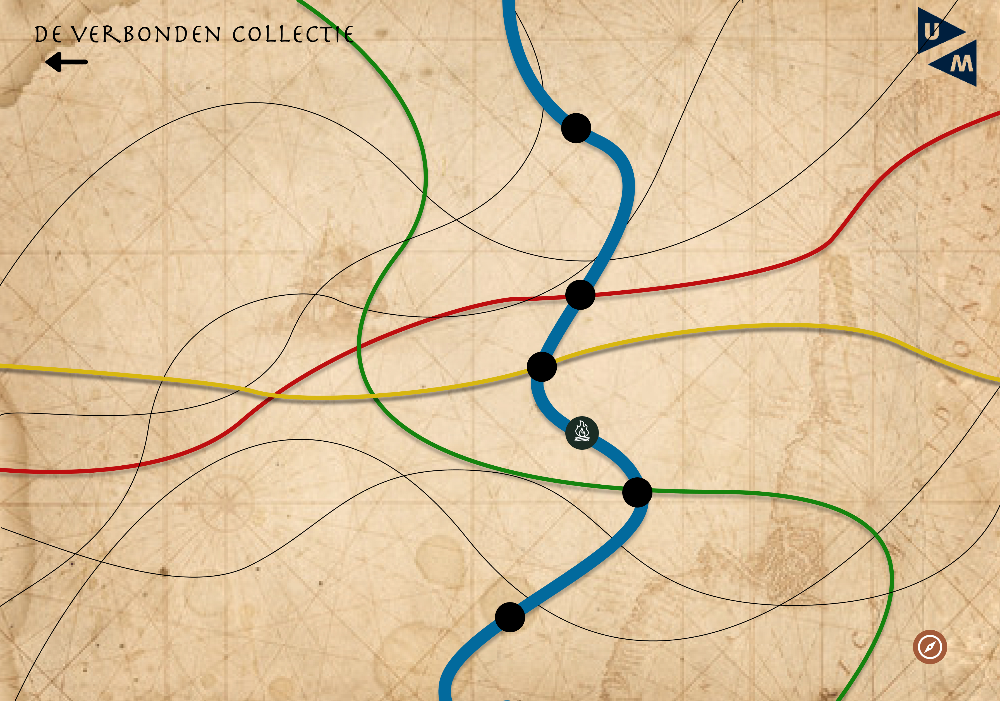
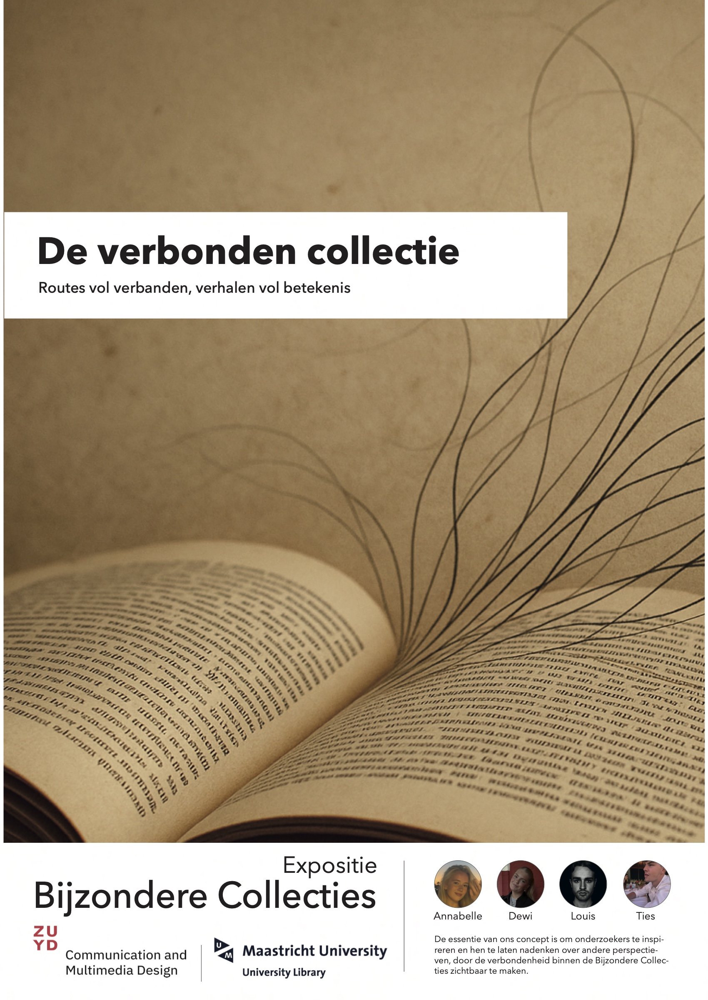
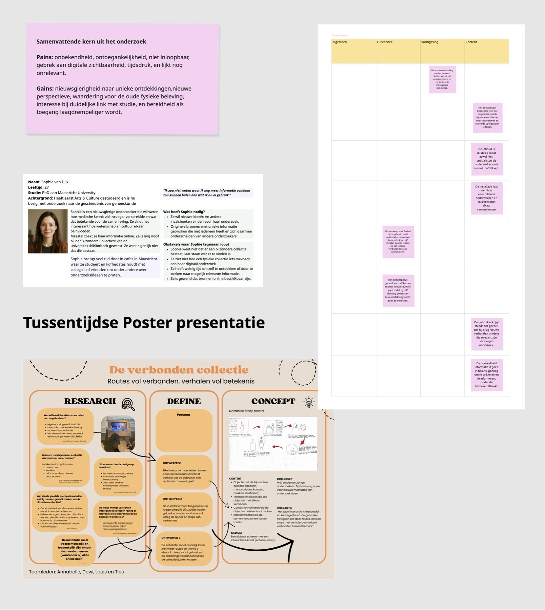
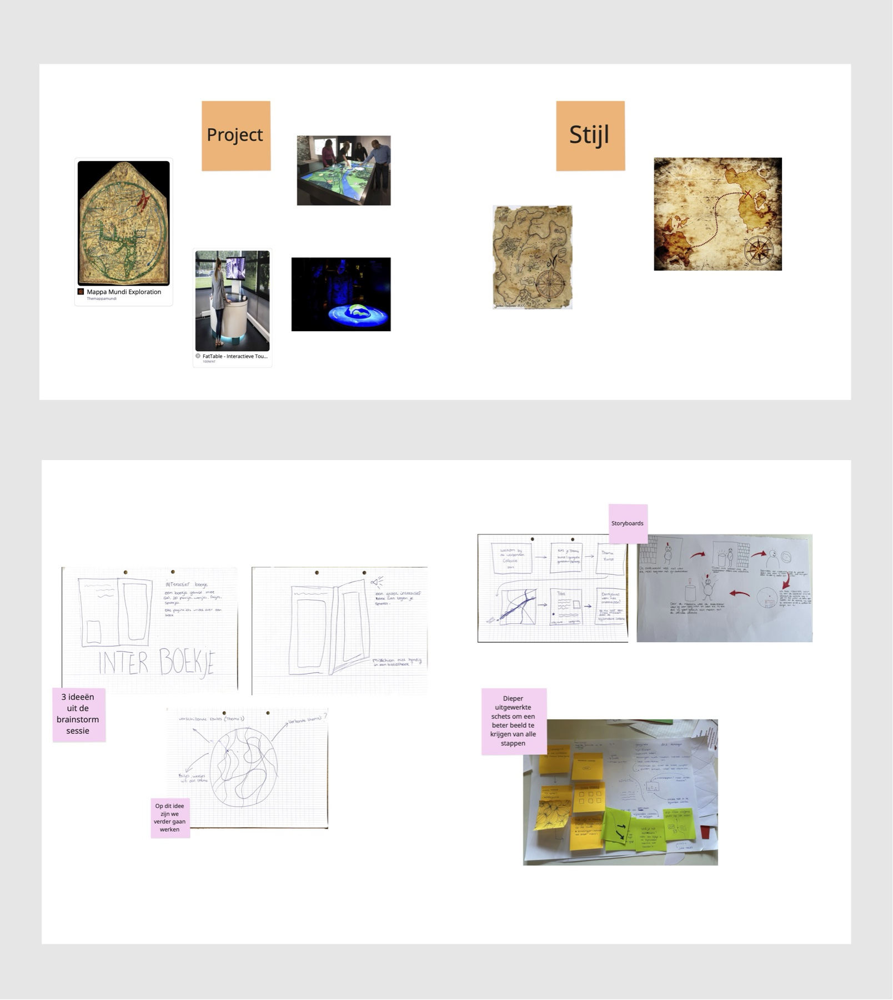
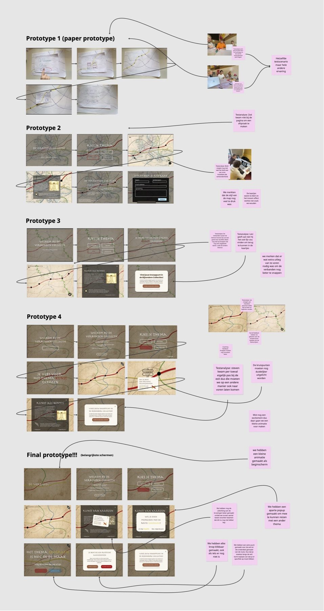
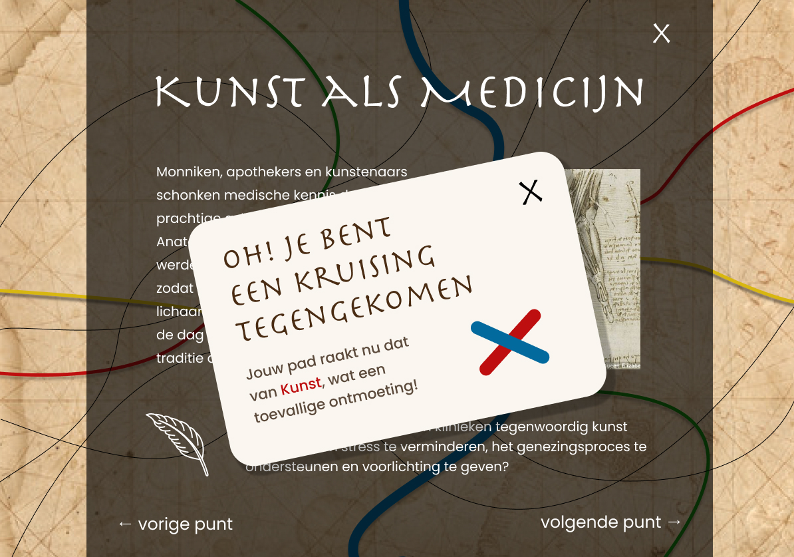

Overview
A real client project for the University Library of Maastricht, where the central question was how to help researchers discover the Special Collections, a hidden set of around 250,000 volumes, some of them dating back to the 15th century, that almost no one at the university knows exist. Research carried the whole project, starting with field visits and interviews with PhD students in the library and a serious amount of literature before any design decisions got made.
The concept we landed on is De Verbonden Collectie, a touchscreen interface shaped like an antique map with thematic routes and crossroads that link items across topics, built around the idea that every discovery in the collection connects to another discovery and nothing stands alone. We moved through four full iteration rounds from a paper prototype to a Figma build, testing with real users every time and adjusting the map and the navigation at each step. This is still the project that taught me research actually carries the rest of the work.
The expo poster

the poster we designed for the Special Collections exposition at the university library.



